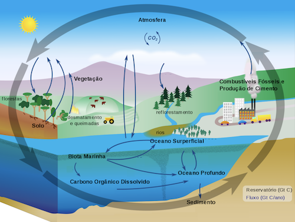
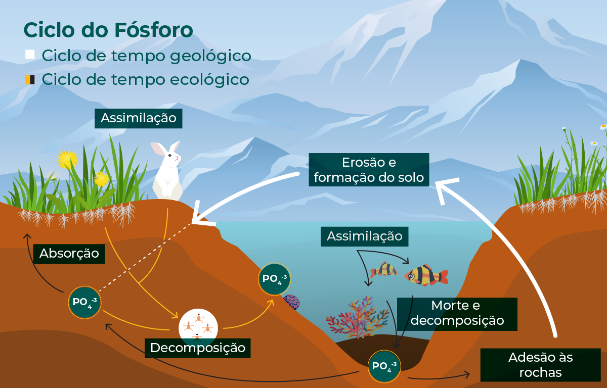
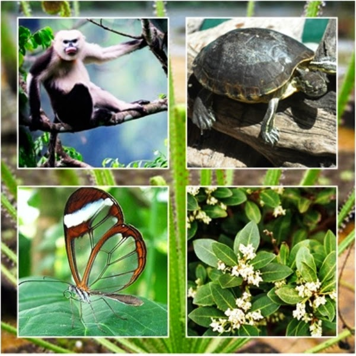
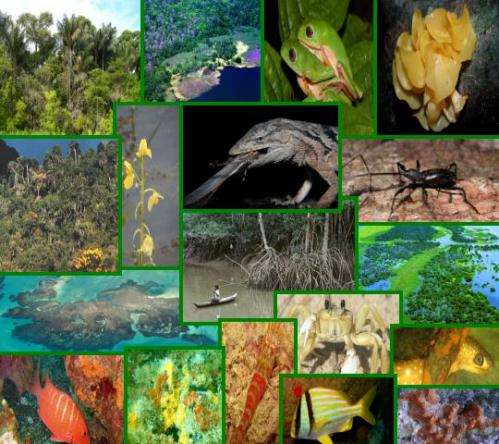
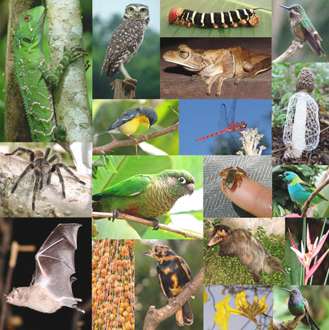

A Biologia é o ramo da ciência que estuda a vida (do grego: bio = vida, logos = estudo). Tem como objetivo compreender o surgimento das espécies bem como sua evolução, estrutura física, comportamento, reprodução e interação com o meio-ambiente.
“Um homem que ousa desperdiçar uma hora de tempo não descobriu o valor da vida.”
— Charles Darwin
“Biologia é o estudo de coisas complicadas que têm a aparência de terem sido projetadas com um propósito.”
— Richard Dawkins
“Há biologia em tudo, mesmo quando você está se sentindo espiritual.”
— Helen Fisher
“Biologia é a ciência. A evolução é o conceito que faz a biologia única.”
— Jared Diamond
O que é a vida e quando surgiu?
A origem da vida na Terra é um dos temas mais controversos e não totalmente resolvidos. Por isso, muitos se dedicaram a estudar e tentar explicar como surgiram os seres vivos no planeta.
As principais hipóteses são:
Teoria Criacionista: as diferentes formas de vida surgiram através da criação divina.
Biogênese: um ser vivo só pode ser originado a partir de um ser vivo preexistente.
Abiogênese: alguns tipos de materiais possuem um tipo de “princípio ativo” capaz de gerar vida.
Panspermia: a vida na Terra foi trazida do espaço por meteoros e cometas.
Evolução Química: compostos simples presentes na Terra primitiva passaram por diversas reações e formaram compostos tão complexos ao ponto de conceber seres vivos. Essa é a hipótese mais aceita atualmente.
Ecologia
é uma área da biologia que estuda as interações entre os organismos e o ambiente em que vivem, além das relações entre diferentes organismos dentro de um ecossistema.
Ciclos biogeoquimicos

Ciclo do carbono
O carbono é trocado entre a atmosfera, os organismos vivos, os oceanos e o solo.
Ciclo do nitrogenio
O nitrogênio é convertido em diferentes formas, como amônia, nitratos e nitritos, através de processos biológicos e físicos.
Ciclo da água
A água circula entre a atmosfera, a superfície terrestre e os corpos d'água por evaporação, precipitação e infiltração.

ciclo do fosforo
O fósforo é transportado do solo para as plantas e devolvido ao solo por decompositores, sem forma gasosa significativa.
Especíes

Espécie Endêmica
Espécie que é encontrada apenas em uma área geográfica específica, como uma ilha ou região isolada.

Espécie Invasora
Espécie que é introduzida em um novo ambiente, onde não é nativa, e se torna uma ameaça ao ecossistema local.

Espécie Nativa
Espécie que ocorre naturalmente em um determinado ecossistema ou região, sem intervenção humana.
Espécie Ameaçada
Espécie que enfrenta o risco de extinção devido à perda de habitat, caça excessiva, mudanças climáticas, etc.
Conjunto de organismos da mesma espécie em um local.
Comunidade
Conjunto de populações de diferentes espécies.
Ecossistema
Interação entre comunidades e o ambiente físico.
Biosfera
Conjunto de todos os ecossistemas do planeta.
Biodiversidade
variedade de seres vivos no planeta, essencial para o equilíbrio ecológico.
Cadeias e teias alimentares
transferência de energia entre produtores, consumidores e decompositores.
Ciclos biogeoquimicos
garantem a circulação de elementos essenciais, como o ciclo da água, do carbono e do nitrogênio.
Biomoléculas
As biomoléculas são compostos químicos das células de todos os seres vivos. São em geral moléculas orgânicas, compostas principalmente de carbono, além de hidrogênio, oxigênio e nitrogênio. Os átomos de carbono se unem por ligações simples ou duplas e formam cadeias lineares, ramificadas ou cíclicas. A forma como os carbonos se organizam define sua estrutura tridimensional, o que determina suas funções.
As biomoléculas são: proteínas, lipídios, glicídios, enzimas e ácidos nucleicos.